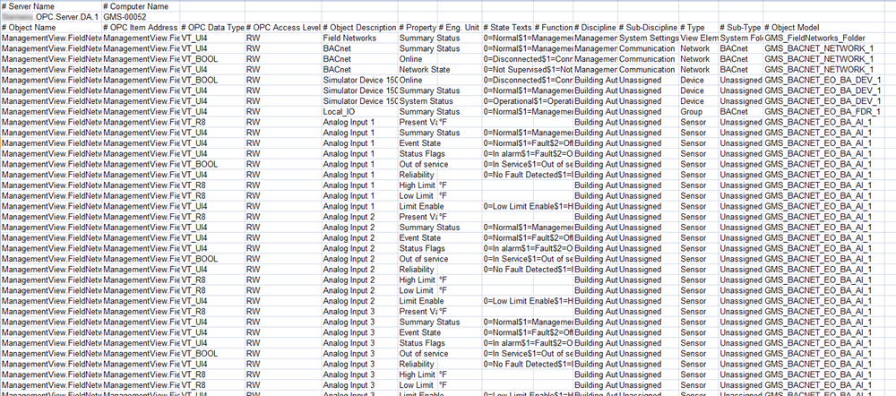

Example of Exported OPC CSV File
In the exported CSV file (a text file containing comma separated values), data is ordered to represent the hierarchy of the data points as shown in the OPC preview, including OPC DA server object model information.

The exported file contains the following elements:
- Server Name: [company name].OPC.Server.DA.1
- Computer Name: name of the computer where the OPC server resides
- OPC items information:
- Object Name
- OPC Item Address
- OPC Data Type
- OPC Access Level
- Object Description
- Property Description
- Engineering Unit
- State Texts
- Object Function
- Discipline
- Sub-Discipline
- Type
- Sub-Type
- Object Model